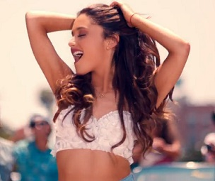

|
Yours Truly es el primer álbum de estudio y debut de la
cantante Ariana Grande, publicado mundialmente el 3 de septiembre de 2013 por el Republic Records .
Musicalmente Yours Truly, es un álbum Pop,Dance pop y R&B, además de presentar influencias con la música pop de los años 90, siendo Grande
comparada con Mariah Carey. Gracias al éxito del álbum, Grande es la artista femenina número quince en
posicionar un álbum debut en el primer lugar de la lista musical US Billboard 200.
(Para más información dirigirse a 2012-2014: Carrera musical y reconocimiento mundial).
The Listening Sessions Tour es el primer tour de la solista,
está basado en Yours Truly. La pre venta de los boletos comenzó el 18 de julio de 2013, esta fue un éxito, ya que los boletos casi se venden por completo
antes de que salieran a la venta los boletos normales. El tour comenzó el día 13 de agosto y terminó el 22 de septiembre, constó de presentaciones En
La mayoría del continente norteamericáno.
|

|